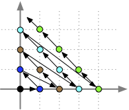

Fonctions récursives
Nous allons montrer dans cette partie un modèle équivalent au pseudo-code nommé les fonction récursives.
On va vu que les fonctions primitives récursives sont calculables mais qu'il existe des fonctions calculables non primitives récursives (comme la fonction d'Ackermann par exemple).
Un pseudo-code est composé d'une suite de blocs d'instructions à executer séquentiellement. Chaque bloc peut être vue comme des fonctions. Si par exemple deux blocs consécutifs utilisent et modifient les variables x1 à xn, on peut écrire :
(x1, ..., xn) = f(x1, ..., xn)
g(x1, ..., xn)
Les blocs en pseudo-code sont de plusieurs types :
- exécution d'une fonction et affectation à une variable. On a vu que la seule fonction nécessaire était la fonction
NAND - bloc de test. On a vu que le seul bloc de test nécessaire est : "si une variable est nulle alors exécute le bloc"
- bloc pour chaque
- bloc tant que
Avant de nous attaquer à chaque type de bloc, commençons par résoudre le premier problème : les fonctions récursives primitives rendent un entier et pas une liste de variables.
Couplage de Cantor
La fonction de couplage de Cantor est une bijection de $\mathbb{N}^2$ dans $\mathbb{N}$ :
Proposition
La fonction $f: \mathbb{N}^2 \rightarrow\mathbb{N}$ telle que : $\pi(x, y) = (x + y + 1)(x+y)/2 + y$ est appelée fonction de couplage de Cantor et est une bijection de $\mathbb{N}^2$ dans $\mathbb{N}$.
preuve
preuve
On a (clairement) que $\pi(x, y) = \sum_{i=0}^{x+y} i + y$. Donc s'il existe deux couples $(x, y)$ et $(x', y')$ tels que $\pi(x, y) = \pi(x', y')$ alors :
- soit $x+y = x'+y'$ et l'égalité des $\pi$ donne $y=y'$ et donc $x=x'$
- soit $x+y > x'+y'$ et l'égalité des $\pi$ donne $y' = \sum_{i=x'+y'+1}^{x+y} i + y$. Or $\sum_{i=x'+y'+1}^{x+y} i + y \geq x'+y'+1 + y > y$ ce qui est impossible.
La fonction de couplage de Cantor est donc une injection.
Réciproquement, on a :
- $\pi(0, 0) = 0$
- $\pi(0, y) + 1 = \pi(y + 1, 0)$
- $\pi(x, y) + 1 = \pi(x - 1, y + 1)$ si $x > 0$
Tous les entiers sont donc associé à un couple $(x, y)$
La bijection de la fonction de couplage :

La fonction $\pi$ et son inverse sont de plus primitives récursives :
Proposition
La fonction de couplage de Cantor $\pi$, ainsi que les deux fonction ${\pi^{-1}_1}$ et ${\pi^{-1}_2}$ tels que $\pi({\pi^{-1}_1}(n), {\pi^{-1}_2}(n)) = n$ sont primitives récursives.
preuve
preuve
La fonction $\pi$ est clairement primitives récursive car on peut l'écrire sous la forme $\pi(x, y) = \sum_{i=0}^{x+y} i + y$. Comme la somme des $n$ premiers entiers est récursive primitive :
La fonction de couplage de Cantor l'est également :
Pour les fonction inverses, commençons par remarquer que : $\text{somme}(x+y) \leq \pi(x, y) < \text{somme}(x+y + 1)$. De là on peut définir la fonction $\text{somme}^{-1}(n)$ comme étant le plus grand entier tel que $\text{somme}^{-1}(n) \leq n$. Cette fonction est récursive primitive :
On a alors que $x+y = \text{somme}^{-1}(\pi(x, y))$ et donc :
- $y = \pi^{-1}_2(\pi(x, y)) = \pi(x, y) - \text{somme}(\text{somme}^{-1}(\pi(x, y)))$
- $x = \pi^{-1}_1(\pi(x, y)) = \text{somme}^{-1}(\pi(x, y)) - \pi^{-1}_2(\pi(x, y))$
On peut alors utiliser notre fonction $\pi$ pour définir récursivement pour $n>2$ :
- $\pi^{(2)}(x_1, x_2) = \pi(x_1, x_2)$
- $\pi^{(n)}(x_1, \dots, x_n) = \pi(x_1, \pi^{(n-1)}(x_2, \dots, x_n))$
Et d'obtenir les fonctions inverses $(\pi^{(n)})^{-1}_i$ :
- $(\pi^{(n)})^{-1}_1(z) = \pi^{-1}_1(z)$
- $(\pi^{(n)})^{-1}_n(z) = \pi^{-1}_2 \circ \dots \circ \pi^{-1}_2(z)$ ($n$ composition)
- $(\pi^{(n)})^{-1}_i(z) = \pi^{-1}_1 \circ \pi^{-1}_2 \circ \dots \circ \pi^{-1}_2(z)$ ($i-1$ composition de $\pi^{-1}_2$) pour $1<i < n$.
On a alors clairement :
Proposition
La fonction de couplage de Cantor $\pi^{(n)}$ est une bijection de $\mathbb{N}^n$ dans $\mathbb{N}$. Cette fonction ainsi que ses inverses $\pi^{(n)}((\pi^{(n)})^{-1}_1(n), \dots, (\pi^{(n)})^{-1}_n(n)) = n$ sont primitives récursives.
Ces fonctions nous permettent d'associer un entier (le retour d'une fonction) à une suite finie de paramètres permettant de passer toutes les variables d'un pseudo-code sous la forme d'un seul entier.
Et on peut alors transformer le code :
(x1, ..., xn) = f(x1, ..., xn)
g(x1, ..., xn)
en :
x = f(x1, ..., xn)
g(x)
Tout en conservant la récursive primalité de $f$ et $g$.
À retenir
La fonction de couplage de Cantor est l'équivalent pour les entiers de ce qu'on a déjà vu pour les chaines de caractères (toute chaîne de caractères peut s'écrire en une suite de 0 et de 1) : toute suite finie d'entiers peut être représentée par un entier.
Composition et Séquentialité
Reprenons le code précédent :
x = f(x1, ..., xn)
g(x)
Cette séquentialité d'exécution d'u pseudo-code, $f$ s'exécute avant $g$, s'interprète comme une composition. En effet, lors de l'exécution de $f\circ [g](x_1, \dots, x_m)$ on commence par évaluer la fonction $g$ puis on évalue $f$ :
À retenir
La composition permet de simuler la séquentialité d'un algorithme puisque pour calculer $f\circ g(x)$ il faut d'abord calculer $y=g(x)$ puis calculer $f(y)$.
On a alors que le code :
x = f(x1, ..., xn)
g(x)
est identique au code :
g(f(x1, ..., xn))
On en déduit :
Proposition
Si un algorithme est composé de deux blocs récursifs primitifs successifs et que chaque bloc modifie $n$ variables alors la succession de ces 2 blocs est primitif récursif.
Fonction NAND
On l'a vu, la seule opération indispensable pour recréer toutes les opérations d'un pseudo-code est la fonction NAND. Cela tombe bien, elle est primitive récursive :
$$
\text{NAND}(x, y) = \text{sub}(1, \text{eq}(x, y))
$$
Bloc conditionnels
Les blocs conditionnels sont très simplement récursifs primitifs :
Proposition
Si $f$, $g$ et $h$ sont trois fonctions primitives récursives de $\mathbb{N}^p \rightarrow \mathbb{N}$ alors la fonction "$\text{si } (f(x) = 0) \text{ alors } g(x) \text{ sinon } h(x)$" l'est aussi.
preuve
preuve
C'est la fonction :
Récursives Primitives et fonction pour chaque
On doit ce résultat à Meyer et Ritchie en 1966 dans le cadre des langages loop. Nous en donnons ici une preuve pour le pseudo-code.
Nous allons montrer dans cette partie que toutes les fonctions récursives primitives sont exactement les fonctions calculables uniquement en utilisant des blocs de répétition pour chaque.
Proposition
Les fonctions récursives primitives peuvent s'écrire en pseudo-code uniquement en utilisant des blocs de répétition pour chaque.
preuve
preuve
Se fait selon une récurrence structurelle : on vérifie que les éléments de bases vérifient la propriété et que les opérations de transformation la conserve. Ceci est clair :
- les fonctions primitives peuvent être écrites sans boucle,
- la composition de fonctions revient à exécuter les fonctions les unes apres les autres,
- l'algorithme permettant d'écrire la composition et la récursion de fonctions est écrit avec une boucle
pour chaque.
La réciproque est tout aussi simple :
Théorème
Tout pseudo-code qui s'écrit uniquement en utilisant des blocs de répétition pour chaque est une fonction récursive primitive
preuve
preuve
On a vu que tout pseudo-code est une fonction de $\mathbb{N}$ dans $\mathbb{N}$. C'est donc bien une fonction.
Comme l'opération NAND est récursive primitive, que la composition de fonctions est équivalent à la séquentialité de blocs de pseudo-code, et que les blocs conditionnels sont des fonction récursives primitives, on a déjà que tout pseudo-code écrit sans bloc de répétition est récursif primitif.
On peut alors, par récurrence, supposer que tout pseudo-code écrit avec moins de $k$ blocs de répétition pour chaque est une fonction récursive primitive et considérer un pseudo-code écrit avec $k$ blocs de répétition pour chaque.
De part la séquentialité des blocs, on peut se concentrer sur le pseudo-code commençant au premier bloc pour chaque des $k+1$ imbrications.
Par hypothèse de récurrence ce pseudo-code s'écrit :
pour chaque x de K:
y = f(x, y)
Avec $f$ une fonction récursive primitive et $y$ un entier représentant l'ensemble des variables locales que modifie $f$ via une fonction de couplage. Ce code va s'écrire de façon identique en :
pour chaque i de 0 à |K|:
x = K[i]
y = f(x, y)
Si $f$ est récursive primitive, alors le code précédent est équivalent à :
pour chaque i de 0 à |K|:
y = f'(x, y)
Avec $f'$ récursive primitive. Comme le code ci-dessus est exactement une règle de récursion, on en déduit que tout le pseudo-code est récursif primitif.
La proposition précédente montre deux choses :
- que la boucle
pour chaquepermet de créer un grand nombre de fonctions mathématiques, - certaines fonctions calculables, comme la fonction d'Ackermann, ne peuvent s'écrire uniquement avec des boucles
pour chaque - que toutes les fonctions récursives primitives sont définies sur tout leur domaines et sont des fonctions qui s'arrêtent tout le temps
- que toutes les fonctions récursives primitives peuvent s'écrire sans récursion.
Récursives et fonction tant que
Pour pouvoir capter le pseudo-code que l'on écrit avec des boucles tant que il faut ajouter une opérations sur les fonctions récursives primitives.
Définition
Les fonctions récursives sont toutes les fonctions que l'on peut obtenir en combinant les fonctions de base (zéro, projections et successeur) en utilisant les règles de composition, de récursion et de minimisation.
Définition
Soit $f: \mathbb{N}^{n+1} \to \mathbb{N}$. La minimisation de $f$ est notée $\mu^n(f)$ et vaut :
Il est clair que s'il existe un algorithme pour créer $f$, l'algorithme suivant fonctionne pour créer la minimisation :
Nom : minimisation
Entrées :
x[] : un tableau de n entiers
f : une fonction à n+1 paramètres
Programme :
y = 0
tant que f(y, x[1], ..., x[n]) ≠ 0:
y = y +1
rendre y
On voit que cet algorithme ne rend une réponse que s'il existe $x$ tel que $f(x, x_1, \dots, x_n) = 0$. Ceci est normal puisque la fonction de minimisation n'est possible que pour ces valeurs de $(x_1, \dots, x_n)$.
À retenir
Contrairement aux fonction récursives primitives, les fonctions récursives ne sont plus obligatoirement définies sur tout $\mathbb{N}^n$.
Le même raisonnement que pour les blocs pour chaque nous permet d'écrire :
Proposition
Tout pseudo-code qui s'écrit en utilisant des blocs de répétition tant que est une fonction récursive.
Ce qui entraîne :
Proposition
Pseudo-code et fonctions récursives sont deux notions équivalentes.
TBD à faire preuve 8.2.3 math de l'informatique pour une preuve directe p182.
Indécidabilité
Savoir si une fonction récursive est également primitive est un problème indécidable. Il est en effet équivalent au problème de l'arrêt.